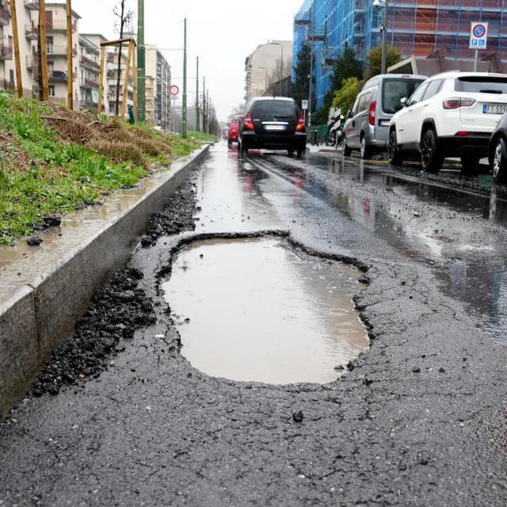
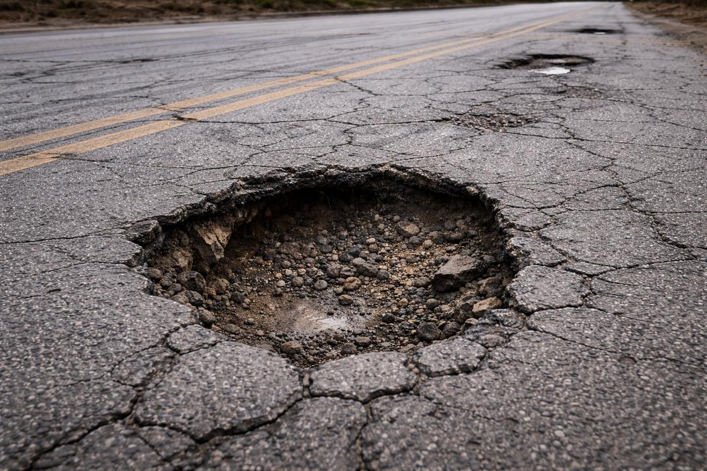
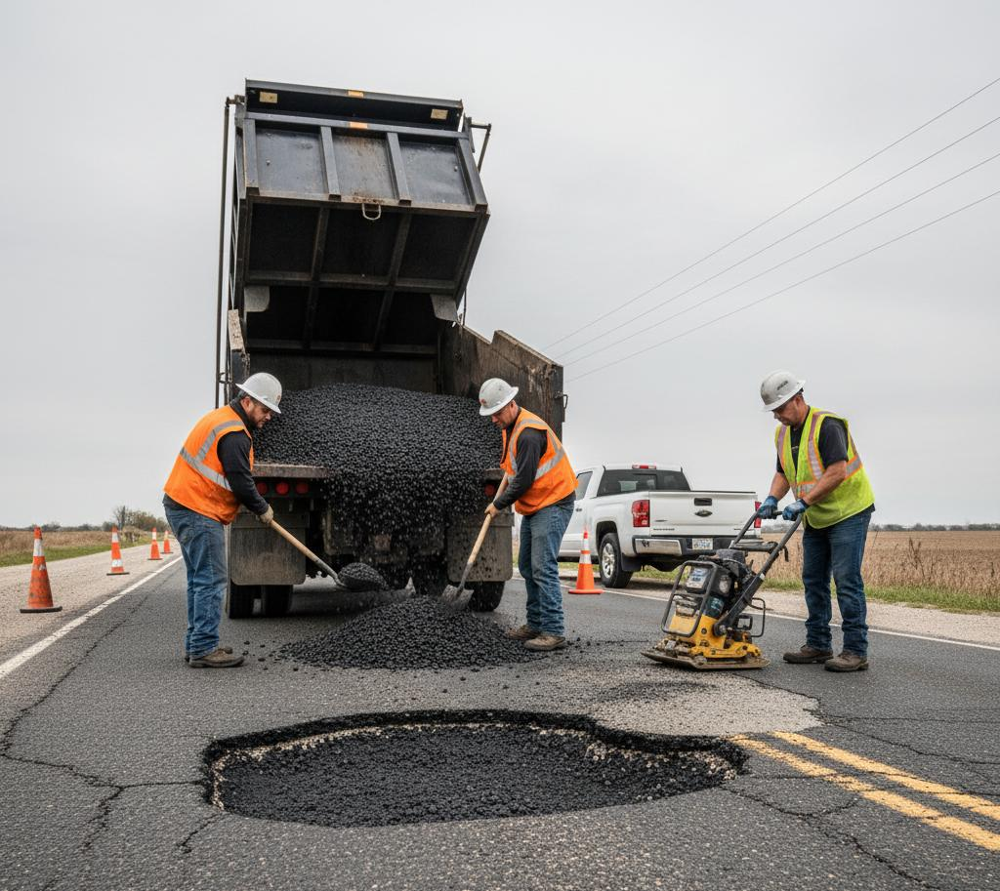
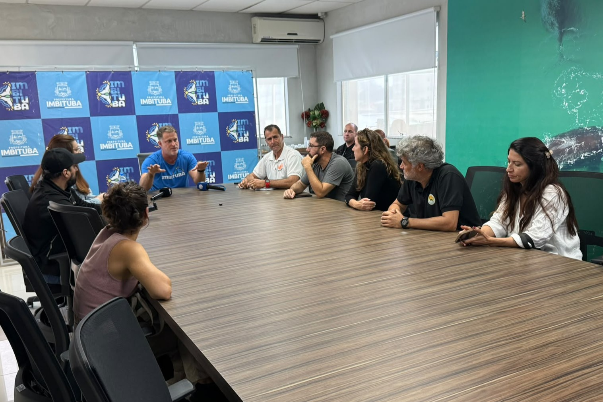

Água e infiltração
A água pode penetrar por fissuras e comprometer camadas do pavimento. Com a passagem dos veículos, áreas fragilizadas podem se soltar e formar buracos.
FOTO-REPORTAGEM · IMBITUBA, SANTA CATARINA
Buracos nas ruas: um problema que vai além do asfalto.
Leia a reportagem ↓Buracos e rachaduras no pavimento não são apenas um incômodo visual. Eles podem dificultar deslocamentos, provocar manobras inesperadas e aumentar o risco para quem dirige, pedala ou caminha pela cidade.
Esta reportagem escolar reúne imagens ilustrativas sobre danos no asfalto, manutenção de vias e gestão pública, com foco no contexto de Imbituba (SC). O objetivo é explicar por que o pavimento se deteriora, quais impactos podem surgir e como a população pode comunicar problemas às autoridades responsáveis.
Nota de apuração: as imagens de buracos e reparos desta página ilustram situações típicas. Elas não estão identificadas como registros de ruas específicas de Imbituba. Para afirmar o local, a data ou a dimensão de uma ocorrência, é necessário confirmar essas informações em campo.

A água acumulada pode esconder a profundidade e as bordas do buraco, tornando mais difícil perceber o risco com antecedência.
A formação de buracos costuma estar ligada a uma combinação de fatores. A causa de cada ponto precisa ser avaliada no local.
A água pode penetrar por fissuras e comprometer camadas do pavimento. Com a passagem dos veículos, áreas fragilizadas podem se soltar e formar buracos.
O peso e a repetição das cargas dos veículos contribuem para o desgaste, especialmente quando a estrutura da via já apresenta falhas.
Fissuras pequenas podem evoluir quando não são tratadas. Inspeções e reparos adequados ajudam a evitar que danos localizados se agravem.

O risco depende da profundidade, do tamanho, da localização e das condições de visibilidade. Em vias movimentadas, um buraco pode levar motoristas a frear ou desviar de repente.
Um serviço duradouro exige identificar a causa do dano e preparar corretamente a área afetada.
Dependendo das condições da via, a equipe técnica pode precisar remover material deteriorado, avaliar as camadas inferiores, corrigir problemas de drenagem, recompor o pavimento e compactar o material. Um remendo superficial pode não resolver o problema se a causa continuar presente.
A solução adequada depende de avaliação técnica, do tipo de pavimento e das condições de tráfego e drenagem do local.

Registrar o local, a extensão aparente e os riscos.
Investigar as causas e a necessidade de sinalização.
Executar o serviço indicado e compactar corretamente.
Verificar se o reparo permanece em boas condições.
A responsabilidade pela conservação depende da classificação e da administração da via. Ruas municipais costumam estar sob gestão do município; rodovias estaduais e federais são administradas pelos órgãos competentes, conforme o trecho e eventuais delegações.
Por isso, antes de cobrar uma solução, é importante confirmar quem administra a rua ou rodovia e encaminhar a solicitação ao canal correto. A reportagem não atribui responsabilidade por ocorrências específicas sem confirmação do local e do órgão responsável.
Consultar o portal da Prefeitura de Imbituba ↗
Registros de reuniões públicas podem ajudar a contextualizar o diálogo entre comunidade e administração. Esta fotografia, por si só, não comprova que a reunião tenha tratado especificamente de buracos ou pavimentação.
Fotografe de um local seguro. Não pare no meio da pista nem se exponha ao trânsito para conseguir uma imagem.
Informe rua, bairro, ponto de referência, data e, se possível, o sentido da via. Não publique dados pessoais de terceiros.
Use os canais oficiais de atendimento ou ouvidoria e guarde o número de protocolo, se fornecido.
Referências institucionais para aprofundar a pesquisa. Consulte as páginas e registre a data de acesso na versão final do trabalho.
Portal municipal para consultar notícias, serviços e canais de atendimento.
Informações institucionais e publicações relacionadas à infraestrutura rodoviária.
Legislação federal relacionada ao trânsito e à segurança viária.
Critério editorial: as explicações gerais desta página não substituem uma vistoria técnica. Não foram incluídos números de buracos, depoimentos de moradores, datas de ocorrências ou respostas oficiais sem comprovação documental.
TRABALHO ESCOLAR · 2026
Repórteres: Arthur, Johan, João Augusto e Eduardo
Instituição: CEE Evolução · Turma 103
Local: Imbituba, Santa Catarina